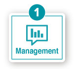

Energy Saving Support Software Energy Saving Support Software EcoAdviser

Apa itu EcoAdviser?
Mendukung kegiatan di empat siklus, dari manajemen hingga pengurangan emisi CO₂ dan penggunaan energi.

Manajemen emisi CO₂ dan penggunaan energi
Manajemen terpusat data tentang listrik, air, udara, gas, minyak berat, dan banyak lagi!
(1) Manajemen tersedia bahkan dengan edisi fungsi terbatas.

Analisis penyebab hilangnya energi
Teknologi AI milik kami dapat digunakan untuk mengekstraksi kehilangan energi secara otomatis!
(2) Dukungan yang diberikan oleh edisi diagnosis AI setelah analisis.

Diagnosis faktor kehilangan energi
Secara otomatis menentukan faktor kehilangan energi dan menampilkan peringkat. Perkiraan dampak perbaikan juga dapat diperiksa!

Verifikasi efektivitas langkah-langkah konservasi energi
Cukup pilih periode waktu untuk memeriksa dampak perbaikan sebelum dan setelah menerapkan langkah-langkah konservasi energi!
Line-up
Edisi fungsi terbatas (1)
Direkomendasikan untuk pelanggan berikut!
・Berusaha mengelola emisi CO₂ dan penggunaan energi
Edisi diagnosis AI (1) hingga (4)
Direkomendasikan untuk pelanggan berikut!
・Berusaha menganalisis pemborosan energi secara otomatis
・Berusaha memperbaiki pemborosan di fasilitas produksi
1. Manajemen: Visualisasi emisi CO₂ dan penggunaan energi
- Edisi fungsi terbatas
- Edisi diagnosis AI
Pantau energi menggunakan berbagai grafik. EcoAdviser membuatnya jauh lebih efisien untuk melakukan aktivitas konservasi energi seperti membuat laporan dan berbagai tugas harian yang sebelumnya telah diselesaikan menggunakan perangkat lunak spreadsheet. Ia juga memanfaatkan visualisasi untuk membantu inisiatif yang diterapkan di tempat kerja, dan dapat membantu meningkatkan kesadaran dengan meningkatkan pemahaman.

Memahami kondisi terkini
Ingin memvisualisasikan emisi CO₂ menurut wilayah.

Diagram pai dan grafik peringkat terlihat sekilas

Kontrol unit tertentu
Ingin mengontrol tidak hanya energi, tetapi juga kuantitas produksi.

Produktivitas yang buruk dan variasi yang terlihat sekilas

Membuat dasbor adalah cara yang efektif untuk menyoroti informasi kepada anggota perusahaan!

[ Contoh aplikasi dasbor di lokasi pelanggan ]
- ・Identifikasi emisi CO₂ dan penggunaan energi oleh setiap departemen dan proses
- ・Pahami area yang perlu ditingkatkan dalam konservasi energi, dll.
Desain layar dapat dibuat sesuai keinginan untuk setiap pelanggan!
2. Analisis: Ekstraksi otomatis kehilangan energi di fasilitas produksi
- Edisi diagnosis AI
Suatu pendekatan yang berfokus pada lima area utama perspektif konservasi energi dengan memanfaatkan pengetahuan Mitsubishi Electric yang dikembangkan selama bertahun-tahun, dan secara otomatis mengidentifikasi kehilangan energi dari masing-masing perspektif tersebut.
Apa saja keahlian Mitsubishi Electric: Lima bidang utama konservasi energi?

・Kehilangan waktu mulai utilitas ・・・・・・Waktu mulai utilitas hingga waktu mulai peralatan produksi
・Waktu mati utilitas loss ・・・・・Penghentian peralatan produksi terhadap waktu penghentian utilitas
* Peralatan tambahan yang beroperasi bersamaan dengan peralatan produksi (misalnya, kipas ventilasi, pengumpul kabut, kompresor, dll.)
Layar Diagnostik Kehilangan Energi
3. Diagnosis: Diagnosis faktor kehilangan energi
- Edisi diagnosis AI
Tanggal, waktu, dan informasi produksi digunakan untuk memberi peringkat item yang berkorelasi dengan faktor penyebab kehilangan energi, dan disajikan bersama dengan dampak peningkatan yang diharapkan.
Apa itu diagnosis faktor kehilangan energi?
Ini merujuk pada item yang sangat terkait dengan hari-hari ketika kehilangan energi lebih besar dari biasanya.

Hasil Diagnosa
Senin
Mulai pukul 6 pagi
Diproduksi 250 unit pada hari itu

Melakukan pencarian fakta berdasarkan hasil diagnostik, dan menerapkan langkah-langkah spesifik
Pengukuran berdasarkan hasil diagnosis
Senin ➡ Revisi waktu mulai/tutup peralatan terkait di awal minggu.
Pukul 6 PAGI ➡ Ingatkan karyawan untuk tidak menyalakan peralatan terlalu pagi.
250 unit➡ Revisi rencana produksi, karena kerugian lebih tinggi pada hari-hari dengan jumlah produksi rendah.
Layar Diagnosis Faktor Kehilangan Energi
4. Verifikasi: Verifikasi efektivitas langkah-langkah konservasi energi
- Edisi diagnosis AI
Dengan hanya memilih periode sebelum dan sesudah perbaikan dilakukan, jumlah penggunaan listrik, biaya konsumsi listrik, dan kehilangan energi sebelum dan sesudah tindakan diterapkan dapat diperiksa dengan mudah.